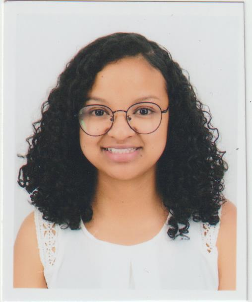
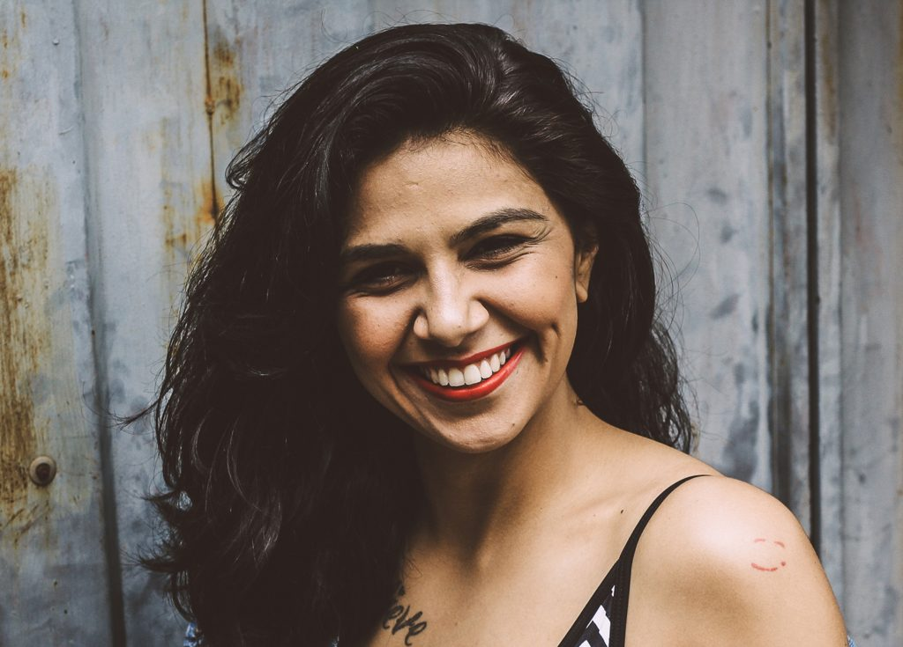

MICHAELLA DAM
Lot II A Anjanahary
michaelladam@gmail.com
FORMATIONS
|
2021 - 2023 : Ankatso - Antanananarivo - Madagascar : |
Obtention de diplôme de Master dans le parcours Comptabilité et Gestion Université d'Antananarivo |
|
2018 - 2021 : Ankatso - Antanananarivo - Madagascar : |
Obtention de diplôme de Licence dans le parcours Comptabilité et Gestion Université d'Antananarivo |
|
2017 : Ankadivato - Antananarivo - Madagascar : |
Obtention de diplôme de Baccalauréat Lycée Privée Aceem (LPA) |
EXPERIENCES PROFESSIONNELLES
|
Banque Centrale de Madagascar (BFM) : |
Stage 3 mois ( Janvier 2023 - Mars 2023) Poste occupé : Comptabilité |
|
Société Malagasy Mutualiste d'Epargne et de Crédit (SMMEC) : |
Stage 6 mois (Juin 2021 - Décembre 2021) Poste occupé : Comptabilité |
LANGUES
|
Malgache : |
Langue maternelle |
|
Français : |
Niveau avancé |
|
Anglais : |
Niveau intermédiaire |
Cliquez les photos pour voir plus d'autres modèles de CV :
|  |  |
 |